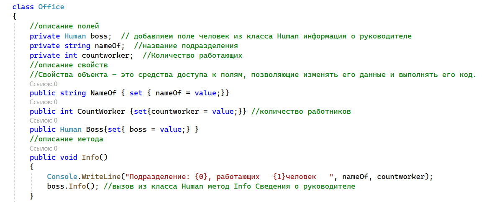
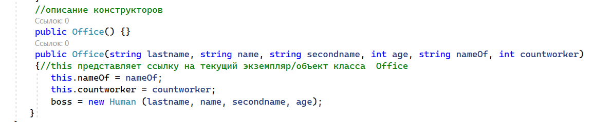
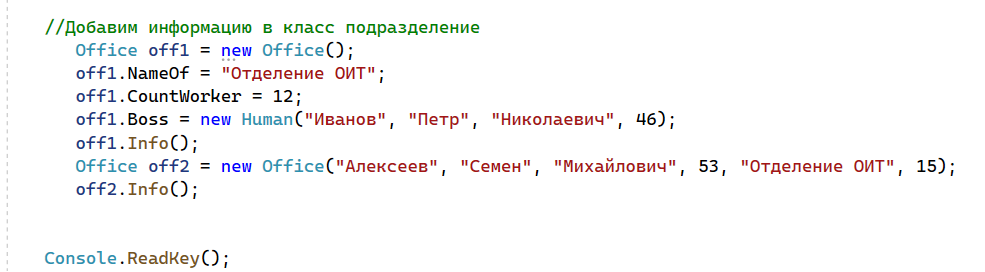

| Тема 1 Классы как поля других классов. | ||
| Назад | ||
|
При описании полей классов мы использовали встроенные типы. Естественно можно использовать и типы, определенные пользователем. Сейчас мы рассмотрим вопросы создания классов, у которых поля сами являются экземплярами ранее нами созданных классов. Отметим, что нет принципиальной разницы, используем ли мы встроенные типы или определенные пользователем. Необходимо только учитывать, что типы, определенные пользователем, относятся к ссылочным. Поэтому при инициализации такого поля приходится использовать конструктор соответствующего класса. Этот конструктор может использоваться либо при создании класса, либо в вызывающей процедуре, например, Main(). Рассмотрим пример, в котором будут присутствовать оба варианта. Создадим класс Office для обозначения подразделений вуза. В качестве полей будем использовать name – название подразделения, countworker – количество работающих, boss – информация о руководителе, причем boss объявим типа Human и воспользуемся свойствами и методами этого класса. Итак, получим следующий код класса Office  Создадим два конструктора. Первый конструктор – без параметров. Для инициализации полей создадим соответствующие свойства. Второй конструктор – с шестью параметрами. Также опишем метод Info() для вывода информации на экран, причем данные о руководителе будем выводить с помощью метода Info() класса Human, а название подразделения и количество работающих выведем непосредственно. 
Как видим, при создании второго конструктора Office для инициализации поля boss мы использовали конструктор Human. Теперь в процедуру Main() запишем код  Здесь мы объект off1 создали с помощью конструктора без параметров, и нам пришлось для инициализации свойства Boss использовать конструктор Human. Объект off2 создали с помощью второго конструктора. После выполнения кода получим Подразделение: кафедра математики, работающих 12 человек Иванов Петр Николаевич, 46 лет Подразделение: кафедра физики, работающих 15 человек Алексеев Семен Михайлович, 53 года Заметим, что классы Human и Office имеют одноименные поля name, свойства Name и методы Info(). Однако это не вызывает проблем. Только при описании конструктора класса Office с параметрами нам пришлось для обозначения параметров использовать имена name и name1 |
||
| Конспект подготовлен Бакулиным А. М. 2022 год. | ||